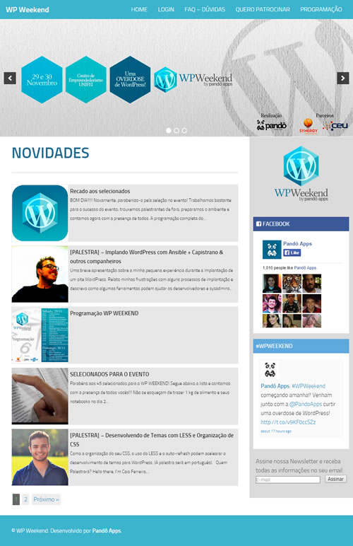
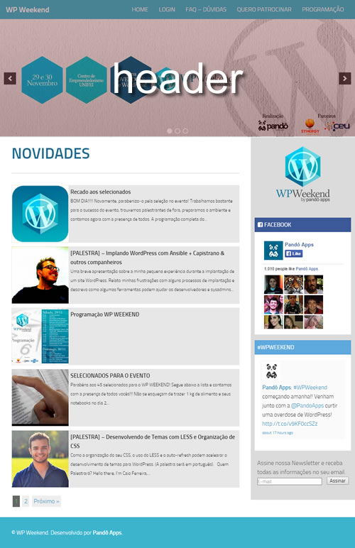
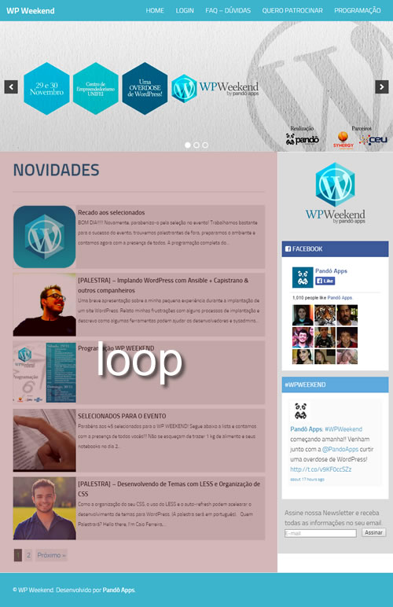
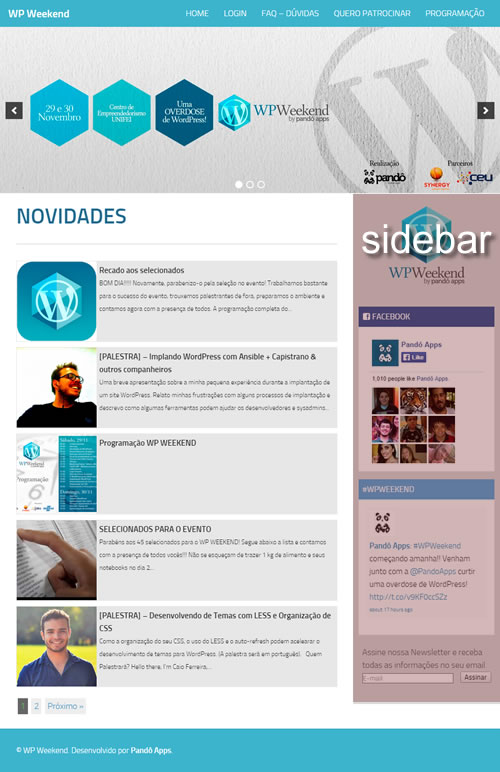
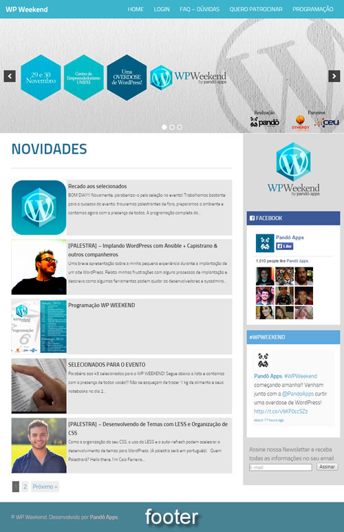

Desenvolvedora front-end
Estrutura da página inicial
Estrutura da página inicial
Estrutura da página inicial
Estrutura da página inicial
Estrutura da página inicial
Os temas são armazenados na pasta
wp-content/themes.
Um tema é composto por pelo
menos 2 arquivos:
index.php
style.css
index.php
Conteúdo básico
get_header();
if (have_posts()) :
while (have_posts()) :
the_post();
the_content();
endwhile;
endif;
get_sidebar();
get_footer();
style.css
Conteúdo básico
/*
Theme Name: WP Weekend Theme Example
Author: Talita Goulart
License: GNU General Public License v2 or later
License URI: http://www.gnu.org/licenses/gpl-2.0.html
Tags: clean
This theme, like WordPress, is licensed under the GPL.
Use it to make something cool, have fun, and share what you've learned with others.
*/
header.php
Template tags
wp_title();
bloginfo();
get_search_form();
loop
Conteúdo básico
if (have_posts()) :
while (have_posts()) :
the_post();
the_content();
endwhile;
endif;
loop
Template tags
the_title();
the_excerpt();
the_content();
the_date();